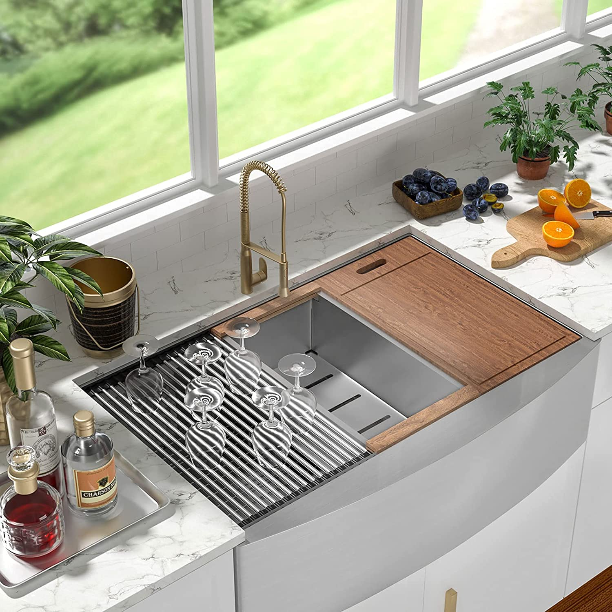
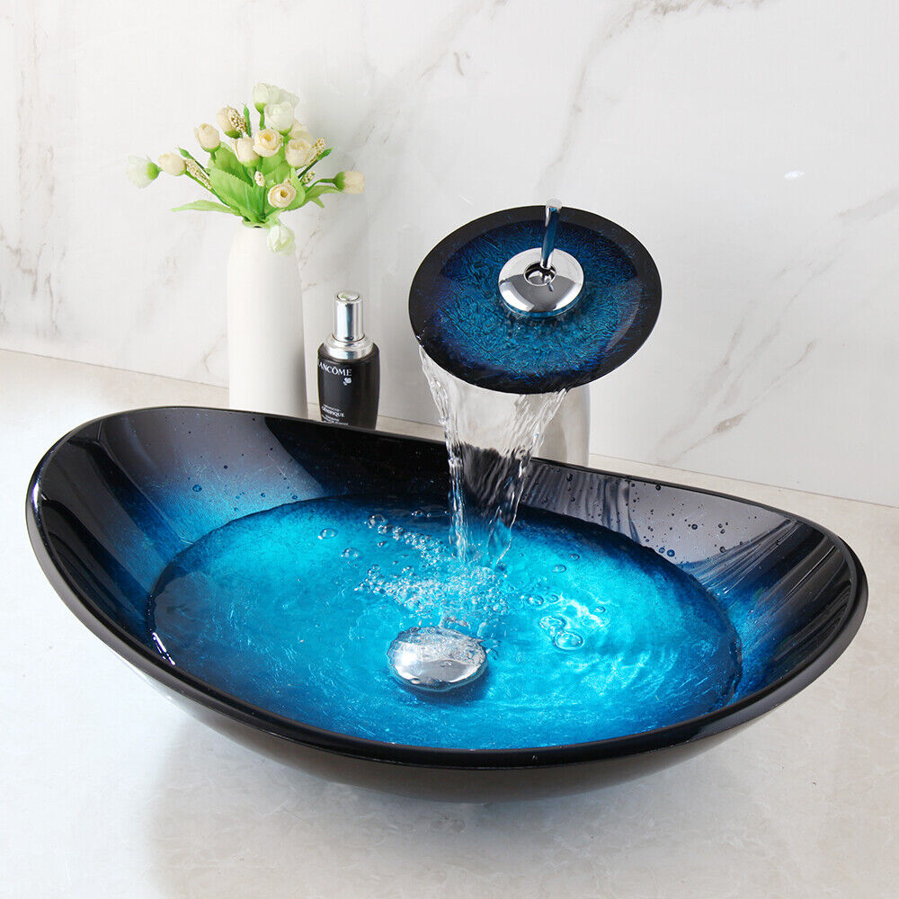
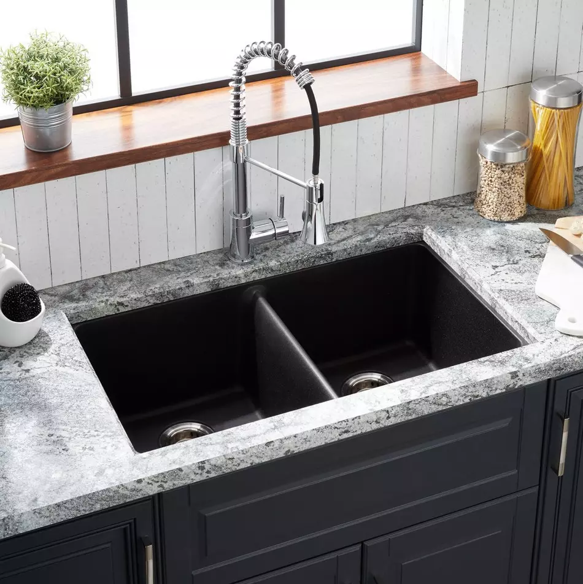
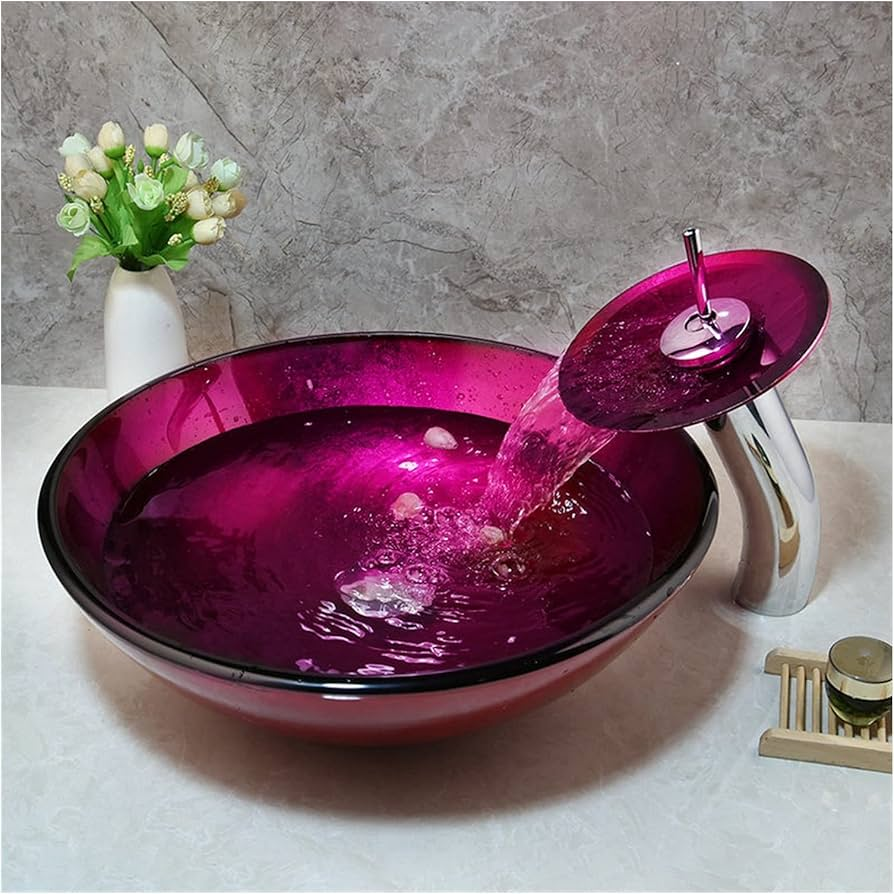
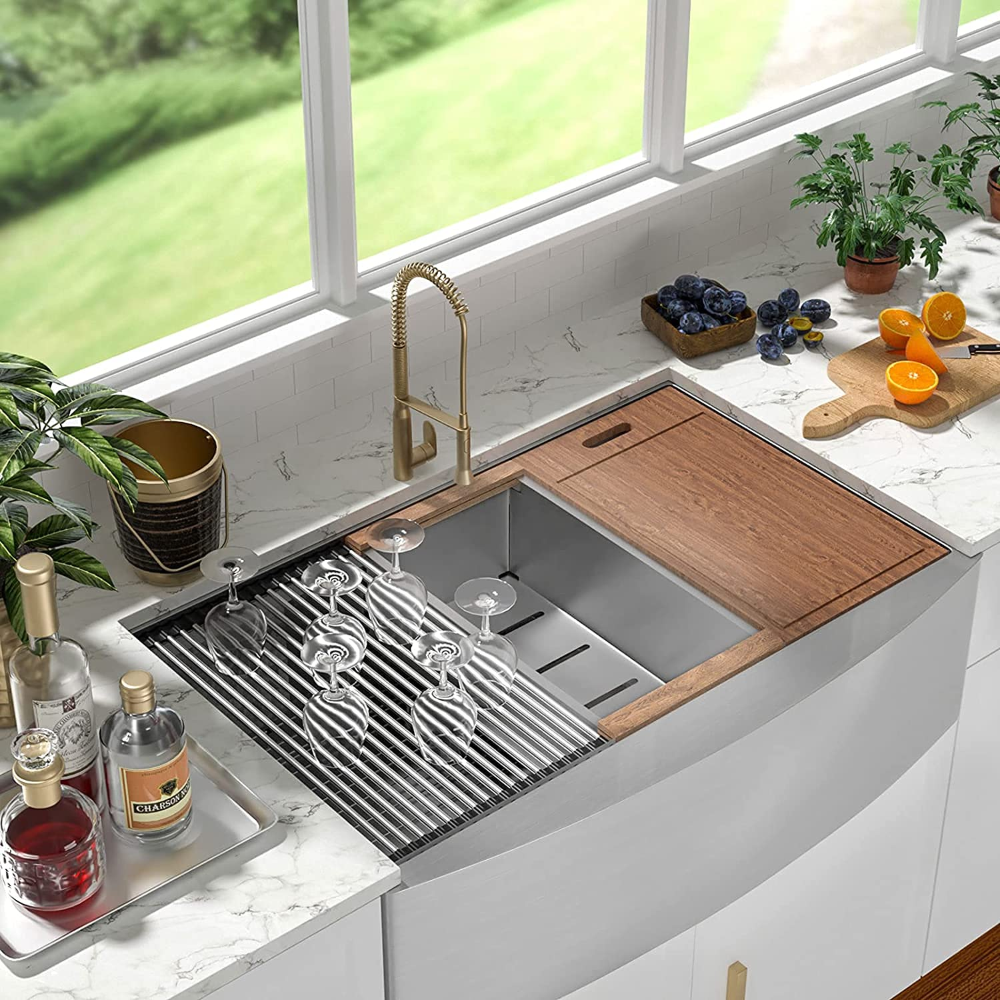
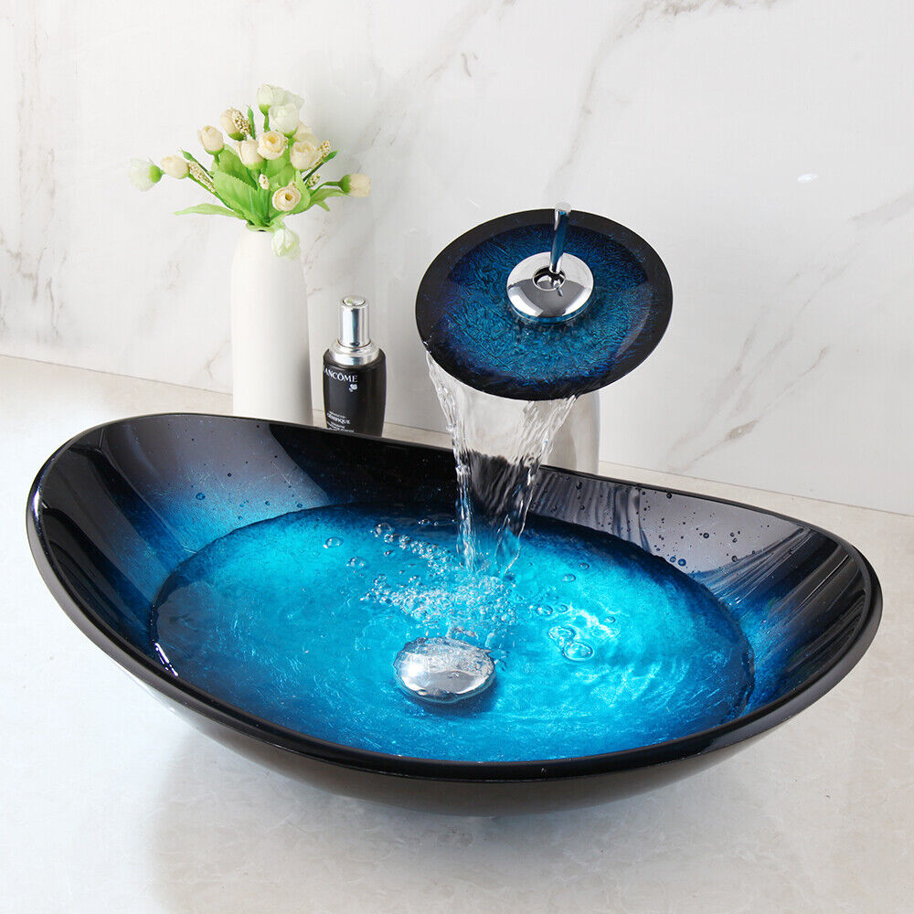
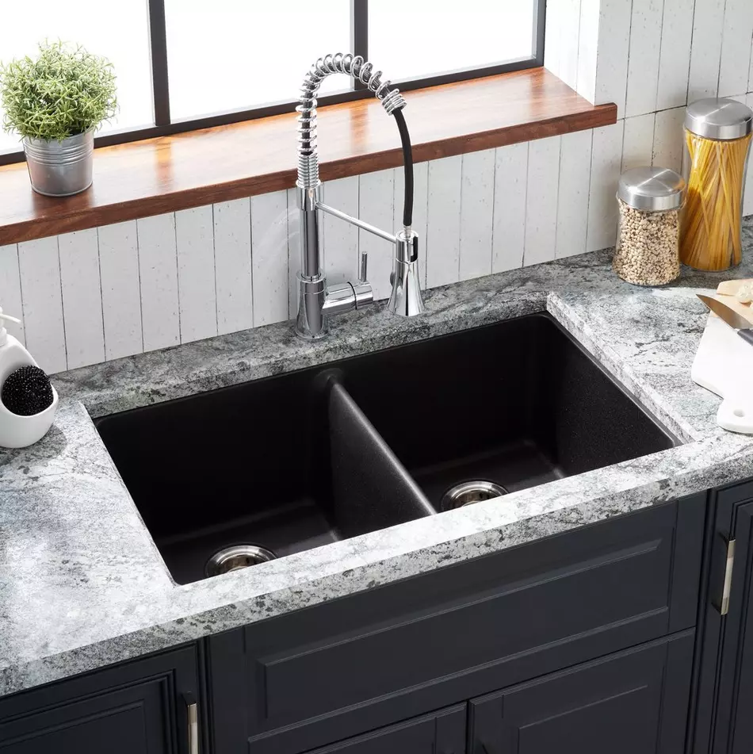
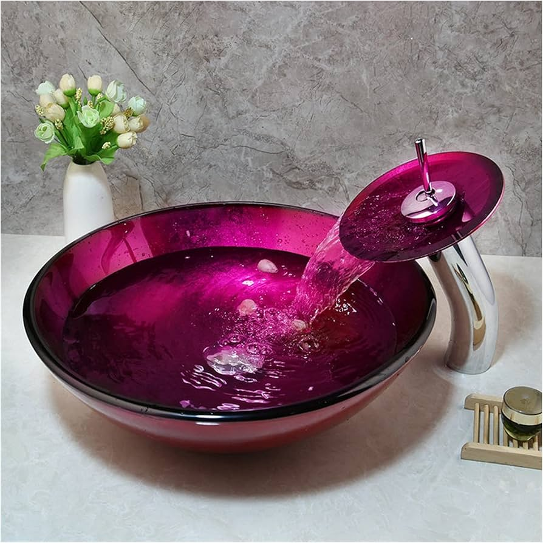
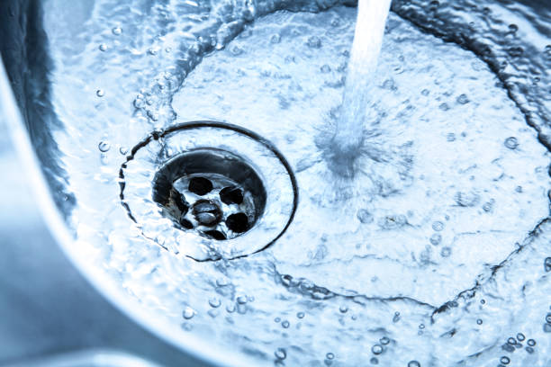
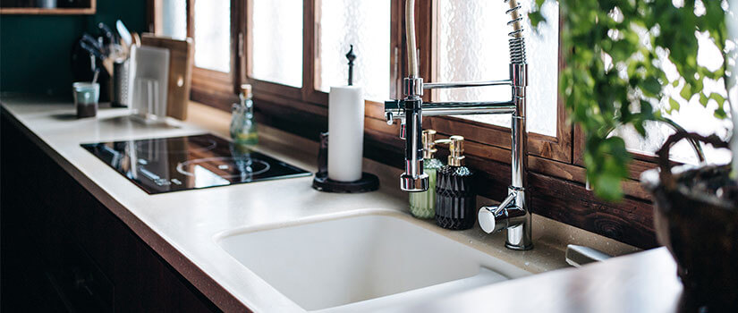

Sinks R Us
Your one-stop shop for all types of sinks

About Our SinksAt Sinks R Us, we offer a wide variety of sinks to suit every need. From classic designs to modern styles, our sinks are made from high-quality materials and built to last. |
 







Types of SinksExplore our extensive range of sinks, including undermount, farmhouse, and vessel sinks etc. Each type comes with its own unique features and benefits to match your kitchen or bathroom design. |

Features and BenefitsOur sinks come with a range of features, including easy-to-clean surfaces, scratch resistance, and various styles to complement your decor. Learn more about what makes our sinks stand out. Easy-to-Clean SurfacesOur sinks feature easy-to-clean surfaces, making kitchen maintenance a breeze. Scratch Resistance
Built to withstand daily wear and tear, our sinks are highly scratch-resistant. Various StylesChoose from a variety of styles to perfectly match your kitchen decor. |
|
© 2024 Sinks R Us